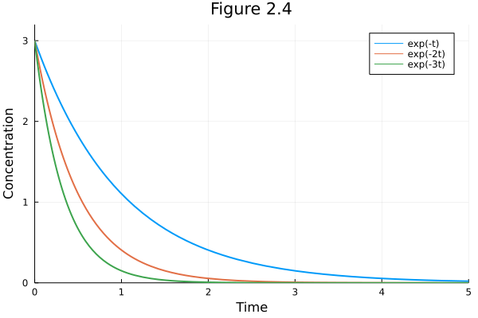
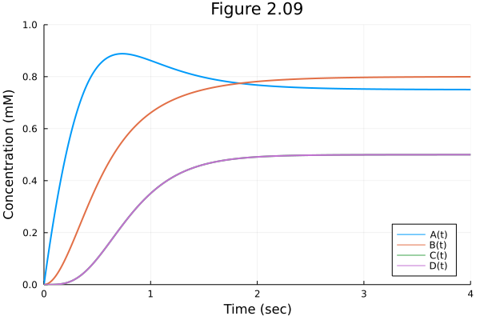
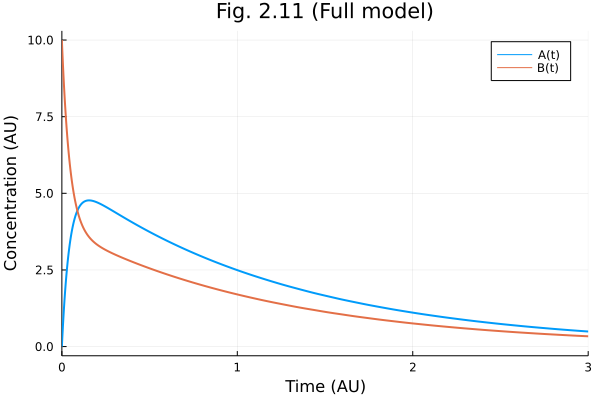
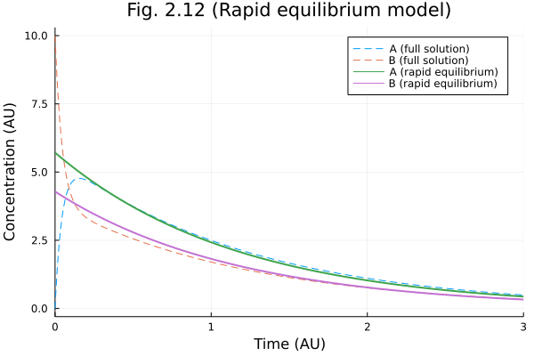
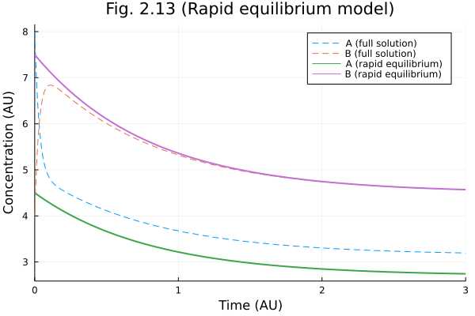
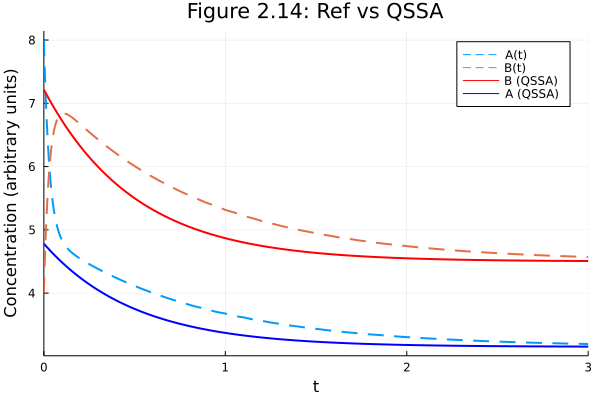
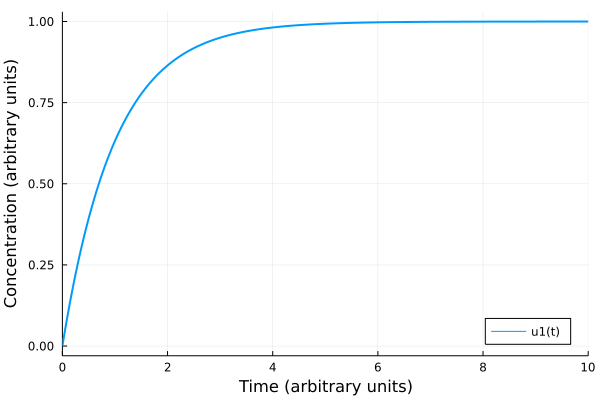

Chapter 2
Contents
Chapter 2#
Fig 2.04 Exponential decay#
using Plots
Plots.gr(lw=2)
Plots.GRBackend()
plot([t-> 3 * exp(-t) t->3 * exp(-2t) t-> 3 * exp(-3t)],
0.0, 5.0,
xlim = (0, 5), ylim=(0, 3.2),
xlabel="Time", ylabel="Concentration",
label = ["exp(-t)" "exp(-2t)" "exp(-3t)"],
title= "Figure 2.4")

Fig 2.09#
Numerical Simulation of a metabolic network
using DifferentialEquations
using Catalyst
using ModelingToolkit
using Plots
Plots.gr(lw=2)
Plots.GRBackend()
# Convenience functions
hill(x, k) = x / (x + k)
hill(x, k, n) = hill(x^n, k^n)
hill (generic function with 2 methods)
# Model building
net = @reaction_network begin
3.0, ∅ --> A
2.0, A --> B
2.5, A + B --> C + D
3.0, C --> ∅
3.0, D --> ∅
end
\[\begin{split} \begin{align*}
\require{mhchem}
\ce{ \varnothing &->[$3.0$] A}\\
\ce{ A &->[$2.0$] B}\\
\ce{ A + B &->[$2.5$] C + D}\\
\ce{ C &->[$3.0$] \varnothing}\\
\ce{ D &->[$3.0$] \varnothing}
\end{align*}
\end{split}\]
speciesmap(net)
Dict{Term{Real, Base.ImmutableDict{DataType, Any}}, Int64} with 4 entries:
B(t) => 2
A(t) => 1
D(t) => 4
C(t) => 3
odesys = convert(ODESystem, net)
\[\begin{split} \begin{align}
\frac{dA(t)}{dt} =& 3.0 - 2.0 A\left( t \right) - 2.5 A\left( t \right) B\left( t \right) \\
\frac{dB(t)}{dt} =& 2.0 A\left( t \right) - 2.5 A\left( t \right) B\left( t \right) \\
\frac{dC(t)}{dt} =& - 3.0 C\left( t \right) + 2.5 A\left( t \right) B\left( t \right) \\
\frac{dD(t)}{dt} =& - 3.0 D\left( t \right) + 2.5 A\left( t \right) B\left( t \right)
\end{align}
\end{split}\]
u0 = zeros(4)
tend = 10.0
sol = solve(ODEProblem(net, u0, tend))
retcode: Success
Interpolation: specialized 4th order "free" interpolation, specialized 2nd order "free" stiffness-aware interpolation
t: 30-element Vector{Float64}:
0.0
9.999999999999999e-5
0.0010999999999999998
0.011099999999999997
0.03416738935703762
0.06493821924885028
0.10129342853323639
0.14525435522588204
0.19819668175417032
0.26286632617142736
0.3419742044838213
0.44080774819296664
0.5771315889770864
⋮
1.830014996960646
2.197707449847055
2.5929228500390114
3.070988404563895
3.635005117769844
4.345026331828728
5.236474357258272
6.330695654007515
7.48438122559773
8.528826753577082
9.447758784257482
10.0
u: 30-element Vector{Vector{Float64}}:
[0.0, 0.0, 0.0, 0.0]
[0.00029997000199933764, 2.999799953754866e-8, 5.623912546644786e-16, 5.623912546644786e-16]
[0.003296372652316679, 3.627331236355826e-6, 8.218056460901692e-12, 8.218056460901692e-12]
[0.0329330063952576, 0.00036682535223159706, 8.356768013816546e-8, 8.356768013816546e-8]
[0.09907115088224092, 0.0034163858957268803, 7.167032718303424e-6, 7.167032718303424e-6]
[0.1826051333283312, 0.012026884125403823, 8.782075229051208e-5, 8.782075229051208e-5]
[0.27458560311863056, 0.028271411264638828, 0.0004812986929526292, 0.0004812986929526292]
[0.376275702265308, 0.05545575547218167, 0.0018458588282366033, 0.0018458588282366033]
[0.485008600439392, 0.09682260687979068, 0.005651818771368888, 0.005651818771368888]
[0.5976299985245495, 0.15593813059625988, 0.014887540334918159, 0.014887540334918159]
[0.7060542738009917, 0.23413137070335094, 0.03456312991644006, 0.03456312991644006]
[0.7999346887540008, 0.3306157614843423, 0.07214328866706467, 0.07214328866706467]
[0.868099073692551, 0.44735770235545985, 0.14105849922247535, 0.14105849922247535]
⋮
[0.7748671352970111, 0.7741106474503218, 0.48569070939480613, 0.48569070939480613]
[0.7620056753942996, 0.7872154147018846, 0.4951725697048148, 0.4951725697048148]
[0.7555436034557512, 0.7939561591838177, 0.4984392985990445, 0.4984392985990445]
[0.7522119643699016, 0.7975437704008103, 0.499558611382098, 0.499558611382098]
[0.7507598156279376, 0.7991477439594185, 0.49988225972360306, 0.49988225972360306]
[0.7502017037015326, 0.7997737766506505, 0.49997095813437403, 0.49997095813437403]
[0.7500411300001868, 0.7999559299877596, 0.4999905863513931, 0.4999905863513931]
[0.750015485835952, 0.799993139530326, 0.49998007704142966, 0.49998007704142966]
[0.7500569879084464, 0.7999989482637787, 0.49988743475420266, 0.49988743475420266]
[0.750173859228418, 0.7999998318092675, 0.49965239385202914, 0.49965239385202914]
[0.750234457254439, 0.799999968717207, 0.49953109459916845, 0.49953109459916845]
[0.7500362351233415, 0.799999988885351, 0.49992753979187815, 0.49992753979187815]
plot(sol, xlims=(0.0, 4.0), ylims=(0.0, 1.0),
xlabel="Time (sec)", ylabel="Concentration (mM)", title="Figure 2.09",
legend=:bottomright)

Figure 2.11-14#
Model reduction of ODE metabolic networks
using DifferentialEquations
using Catalyst
using ModelingToolkit
using Plots
Plots.gr(lw=2, fmt=:png)
Plots.GRBackend()
fullModel = @reaction_network begin
k_0, 0 --> A
(k_1, k_m1), A <--> B
k_2, B --> 0
end k_0 k_1 k_m1 k_2
\[\begin{split} \begin{align*}
\require{mhchem}
\ce{ \varnothing &->[$k_{0}$] A}\\
\ce{ A &<=>[$k_{1}$][$k_{m1}$] B}\\
\ce{ B &->[$k_{2}$] \varnothing}
\end{align*}
\end{split}\]
fullSys = convert(ODESystem, fullModel)
\[\begin{split} \begin{align}
\frac{dA(t)}{dt} =& k_{0} + k_{m1} B\left( t \right) - k_{1} A\left( t \right) \\
\frac{dB(t)}{dt} =& k_{1} A\left( t \right) - k_{2} B\left( t \right) - k_{m1} B\left( t \right)
\end{align}
\end{split}\]
speciesmap(fullModel)
Dict{Term{Real, Base.ImmutableDict{DataType, Any}}, Int64} with 2 entries:
B(t) => 2
A(t) => 1
paramsmap(fullModel)
Dict{Sym{Real, Base.ImmutableDict{DataType, Any}}, Int64} with 4 entries:
k_1 => 2
k_0 => 1
k_2 => 4
k_m1 => 3
params = [0, 9, 12, 2]
u0 = [0.0, 10.0]
tend = 3.0
3.0
sol1full = solve(ODEProblem(fullSys, u0, tend, params))
retcode: Success
Interpolation: specialized 4th order "free" interpolation, specialized 2nd order "free" stiffness-aware interpolation
t: 34-element Vector{Float64}:
0.0
8.33250002662905e-6
9.165750029291953e-5
0.0009249075029558242
0.004925551957360877
0.012950994749922366
0.024203391128378236
0.038677031180770836
0.05687483166343594
0.07885039492957484
0.10491523817786631
0.13531140529312286
0.1705820700118174
⋮
1.2744818843056707
1.4489348748297772
1.6048514708614612
1.7517916610977329
1.8976419883558948
2.0465347038843515
2.199447628741752
2.355340092851258
2.5124114680760106
2.669195880837852
2.8250503110720735
3.0
u: 34-element Vector{Vector{Float64}}:
[0.0, 10.0]
[0.0009998041949395534, 9.99883355552422]
[0.010987314386434823, 9.987180710981443]
[0.10981641889273347, 9.871804396920822]
[0.5587745957878649, 9.345993056329629]
[1.3433471904639458, 8.41906301057267]
[2.2233611426294853, 7.361953762978557]
[3.0603231262423427, 6.327621109139267]
[3.7711572305189596, 5.404354632888524]
[4.289690436198695, 4.665729200764198]
[4.608089255631397, 4.119528499347762]
[4.750995177561985, 3.7387728403766536]
[4.760447304261569, 3.4756390415516534]
⋮
[1.9957855196592984, 1.3627244502679103]
[1.7319586498149349, 1.1834007490051872]
[1.526152057864577, 1.0428346000298325]
[1.3548533049086728, 0.9254354291514815]
[1.2038103551600592, 0.8220175355928536]
[1.066905765344101, 0.7284268391747675]
[0.9424542370849824, 0.6434317471476784]
[0.8304907442022654, 0.5670030011348698]
[0.7311216593250228, 0.49918308583598203]
[0.6437926921119194, 0.43957679283471207]
[0.5673269252649327, 0.38737532007652475]
[0.4923357035780424, 0.3359380894860697]
plot(sol1full, xlabel="Time (AU)", ylabel="Concentration (AU)", title="Fig. 2.11 (Full model)")

Figure 2.12 : Rapid equilibrium assumption#
reModel = @reaction_network begin
(k_0, hill(k_1, k_2, k_m1, 1)), 0 <--> B
end k_0 k_1 k_m1 k_2
\[ \begin{align*}
\require{mhchem}
\ce{ \varnothing &<=>[$k_{0}$][$\frac{k_{2} k_{1}}{k_{m1} + k_{1}}$] B}
\end{align*}
\]
speciesmap(reModel)
Dict{Term{Real, Base.ImmutableDict{DataType, Any}}, Int64} with 1 entry:
B(t) => 1
paramsmap(reModel)
Dict{Sym{Real, Base.ImmutableDict{DataType, Any}}, Int64} with 4 entries:
k_1 => 2
k_0 => 1
k_2 => 4
k_m1 => 3
u0re = [sum(u0)]
sol1re = solve(ODEProblem(reModel, u0re, tend, params));
pl2 = plot(sol1full, line=(:dash, 1),label=["A (full solution)" "B (full solution)"])
fracA = params[3] / (params[3] + params[2])
fracB = 1 - fracA
plot!(pl2, sol1re, vars=((t, b̃)-> (t, b̃ * fracA), 0, 1),
label="A (rapid equilibrium)")
plot!(pl2, sol1re, vars=((t, b̃)-> (t, b̃ * fracB), 0, 1),
label="B (rapid equilibrium)")
plot!(pl2, title="Fig. 2.12 (Rapid equilibrium model)",
xlabel="Time (AU)", ylabel="Concentration (AU)")

Figure 2.13: Rapid equilibrium#
with another set of parameters not suitable for Rapid equilibrium assumption.
tspan = 3.0
params = [9, 20, 12, 2]
u0 = [8, 4]
u0re = [sum(u0)]
sol2full = solve(ODEProblem(fullModel, u0, tspan, params));
sol2re = solve(ODEProblem(reModel, u0re, tspan, params));
pl3 = plot(sol2full, line=(:dash, 1),label=["A (full solution)" "B (full solution)"])
fracA = params[3] / (params[3] + params[2])
fracB = 1 - fracA
plot!(pl3, sol2re, vars=((t, b̃)-> (t, b̃ * fracA), 0, 1),
label="A (rapid equilibrium)")
plot!(pl3, sol2re, vars=((t, b̃)-> (t, b̃ * fracB), 0, 1),
label="B (rapid equilibrium)")
plot!(pl3, title="Fig. 2.13 (Rapid equilibrium model)",
xlabel="Time (AU)", ylabel="Concentration (AU)")

Figure 2.14 : QSSA#
Quasi-steady state assumption on species A
qssModel = @reaction_network begin
(k_0, k_2), 0 <--> B
end k_0 k_2
# The initial conditions in QSSA could be tricky
qss_u0(u0, k0, k1, km1, k2) = (k1 * sum(u0) - k0) / (k1 + km1)
qss_u0 (generic function with 1 method)
k0, k1, km1, k2 = params
u0qss = qss_u0(u0, k0, k1, km1, k2)
7.21875
paramsmap(qssModel)
Dict{Sym{Real, Base.ImmutableDict{DataType, Any}}, Int64} with 2 entries:
k_0 => 1
k_2 => 2
sol2qss = solve(ODEProblem(qssModel, [u0qss], tend, (k0, k2)))
retcode: Success
Interpolation: specialized 4th order "free" interpolation, specialized 2nd order "free" stiffness-aware interpolation
t: 11-element Vector{Float64}:
0.0
0.09213371408627077
0.2580853720636457
0.4579200621558787
0.7105343618980664
1.0087389653938472
1.3646427736700562
1.7813285063703053
2.2736033718179636
2.8565649829195463
3.0
u: 11-element Vector{Vector{Float64}}:
[7.21875]
[6.761220680089925]
[6.1225543617019555]
[5.58799115197771]
[5.156461132335911]
[4.861574032821357]
[4.677452865250186]
[4.577129224759847]
[4.528831295794885]
[4.509002568723836]
[4.506757412085525]
pl4 = plot(sol2full, line=(:dash, 2), xlims=tspan,
xlabel="Time (arbitrary units)",
ylabel="Concentration (arbitrary units)",
title="Figure 2.14: Ref vs QSSA")
plot!(pl4, sol2qss, label="B (QSSA)", line=(2, :red))
plot!(pl4, sol2qss , vars= ((t, b) -> (t, (k0 + km1*b)/k1), 0, 1), label="A (QSSA)", line=(2, :blue))

Problem 2.4.6#
using Plots, DifferentialEquations
Plots.gr(lw=2, fmt=:png)
Plots.GRBackend()
# Model
f(u, p, t) = p * (1.0-u)
f (generic function with 1 method)
p = 1.0
u0 = 0.0
tspan = 10.0
10.0
prob = ODEProblem(f, u0, tspan, p)
ODEProblem with uType Float64 and tType Float64. In-place: false
timespan: (0.0, 10.0)
u0: 0.0
sol = solve(prob)
plot(sol, xlabel="Time (arbitrary units)", ylabel="Concentration (arbitrary units)", legend=:bottomright)
